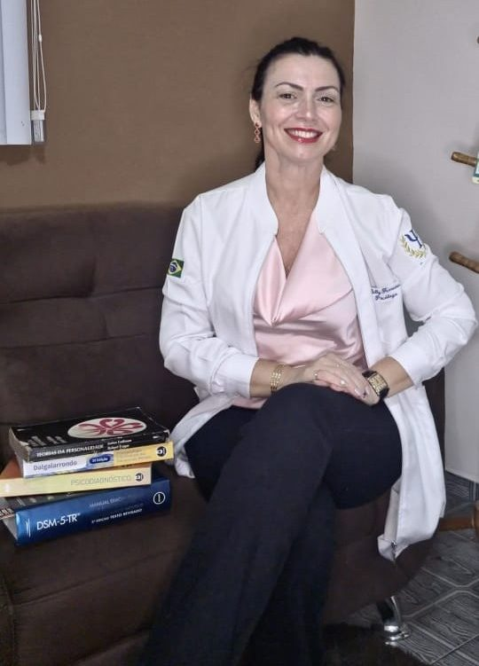

Psicologia clínica
Atendimento individual, de casal e de família, com avaliação psicológica quando o caso pede.
Kelly Cristina é psicóloga clínica e trabalha com abordagem sistêmica: o ponto de partida é o contexto em que o problema aparece — família, trabalho, história — e não o sintoma isolado.

Sou psicóloga com especialização em Neuropsicologia, Psicopatologia e Psicologia Hospitalar. Também sou instrutora de primeiros socorros da Cruz Vermelha Brasileira e instrutora de mergulho.
O consultório nasceu de um projeto social, o FISHEYE PROJECT, que levava jovens para mergulhar, fotografar e aprender a socorrer. A psicologia entrou como base técnica do que já acontecia na prática.
Atendo com abordagem sistêmica: olho para a pessoa dentro dos contextos dela — família, trabalho, história, relações.
Kelly Cristina
A gente combina um horário pelo WhatsApp. Você não precisa explicar nada por escrito.
Serve para entender o que está te trazendo aqui e o que você quer que mude. No fim dela eu te digo como proponho trabalhar isso.
Sessões com objetivo definido e revisão do que está avançando. Presencial ou online, você escolhe a cada semana.
O consultório é uma das três frentes do instituto. As outras duas vieram da formação da Kelly fora da psicologia e continuam ativas.
Atendimento individual, de casal e de família, com avaliação psicológica quando o caso pede.
Cursos e capacitações em primeiros socorros, prevenção de acidentes e preparo para emergências, com formação na Cruz Vermelha Brasileira e atuação na Defesa Civil do Rio.
Consultoria e treinamento de equipes: clima, comunicação e saúde emocional no trabalho.
Atendo adultos, adolescentes, crianças, casais e idosos.
Dos dois jeitos: presencial em Nova Iguaçu (Centro) e no Centro do Rio, ou online, de onde você estiver. Você escolhe a cada semana, conforme a sua rotina.
Você manda uma mensagem pelo WhatsApp e a gente combina um horário. Não precisa explicar nada por escrito antes da sessão — isso a gente conversa pessoalmente.
Atendo das 8h às 20h, de segunda a sexta. O horário exato é combinado direto com você pelo WhatsApp.
Abordagem sistêmica: olho para a pessoa dentro dos contextos em que ela vive — família, trabalho, história, relações — e não só para o sintoma isolado.
Sim. Atendo adultos, adolescentes, crianças, casais e idosos, sempre ajustando a abordagem à fase da vida de cada pessoa.
Neuropsicologia, Psicopatologia e Psicologia Hospitalar, somadas à abordagem sistêmica que orienta todo o trabalho clínico.
Você manda a mensagem, a gente combina o horário. Presencial ou online.